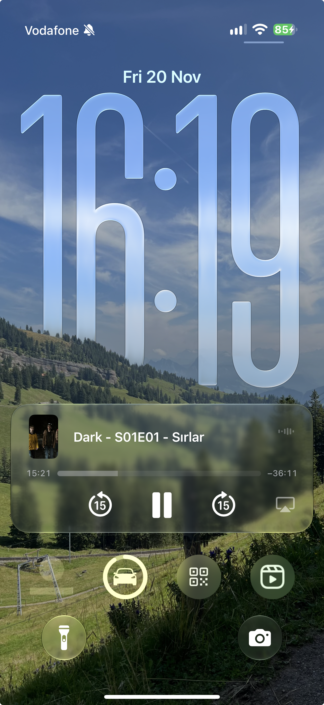

Hinzufügen
Xtream-Codes-Zugang oder einen M3U- / M3U8-Link hinzufügen
Mit Apple anmelden, um Favoriten und Verlauf auf deinen Geräten zu synchronisieren

Xtream Codes, EPG, werbefrei
M3U-Player
Ein schlichter Player für deine eigene M3U- oder Xtream-Codes-Liste.
Live-TV, Filme und Serien. Werbefrei.
Favoriten, Downloads und Fortsetzen.
Easytv Play ist ein Mediaplayer. Die App stellt keine Sender, Abos oder Inhalte bereit. Füge nur eine Quelle hinzu, die du ansehen darfst. EPG, Untertitel und Bildqualität hängen von deinem Anbieter ab.
Keine Werbung. Kein Tracking durch Dritte.

DEINE LISTE
Easytv Play stellt keine Sender, Abos oder Inhalte bereit. Füge nur eine Quelle hinzu, die du nutzen darfst.
Favoriten, Downloads, EPG, Fortsetzen, Untertitel, Face-ID-Sperre und Anmeldung mit Apple.
Hinzufügen
Mit Apple anmelden, um Favoriten und Verlauf auf deinen Geräten zu synchronisieren
Live-TV
Deine Mediathek durchsuchen und Favoriten speichern
EPG

Fortsetzen

Downloads

Die App stellt keine Sender, Abos oder Inhalte bereit. Füge nur eine Quelle hinzu, die du ansehen darfst. EPG, Untertitel und Bildqualität hängen von deinem Anbieter ab.
Keine Werbung. Kein Tracking durch Dritte.
Bildschirme



Lizenzen
Diese App verwendet die folgenden Open-Source-Komponenten.
© VideoLAN und die VLCKit-Autorinnen und Autoren.
Lizenziert unter der GNU Lesser General Public License, Version 2.1 oder später (LGPL-2.1-or-later). Das Framework ist dynamisch gelinkt und darf von der nutzenden Person gemäß der LGPL ersetzt werden.
Easytv Play ist ein IPTV-Player für deine eigenen M3U- oder Xtream-Playlists.
Es spielt Live-TV, Filme und Serien aus dieser Liste, mit Favoriten, Downloads und Fortsetzen. Keine Werbung. Kein Tracking durch Dritte.
Die App stellt keine Sender, Abos oder Inhalte bereit. Füge nur eine Quelle hinzu, die du ansehen darfst. EPG, Untertitel und Bildqualität hängen von deinem Anbieter ab.
Easytv Play ist ein Mediaplayer. Die App stellt keine Sender, Abos oder Inhalte bereit. Füge nur eine Quelle hinzu, die du ansehen darfst. EPG, Untertitel und Bildqualität hängen von deinem Anbieter ab.
Xtream-Codes-Zugang oder einen M3U- / M3U8-Link hinzufügen
Keine Werbung. Kein Tracking durch Dritte.
Mit Apple anmelden, um Favoriten und Verlauf auf deinen Geräten zu synchronisieren. Einzelheiten stehen in der Datenschutzerklärung.
Support für Easytv Play. Schreib an hello@soneraltin.com.